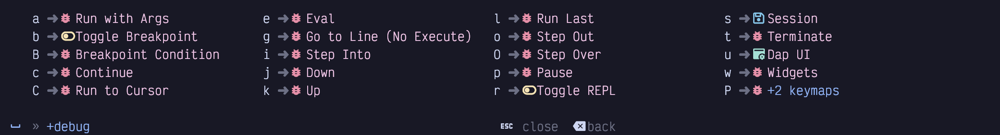
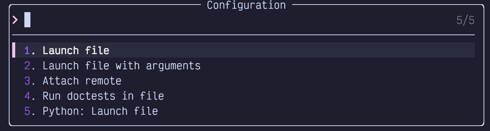
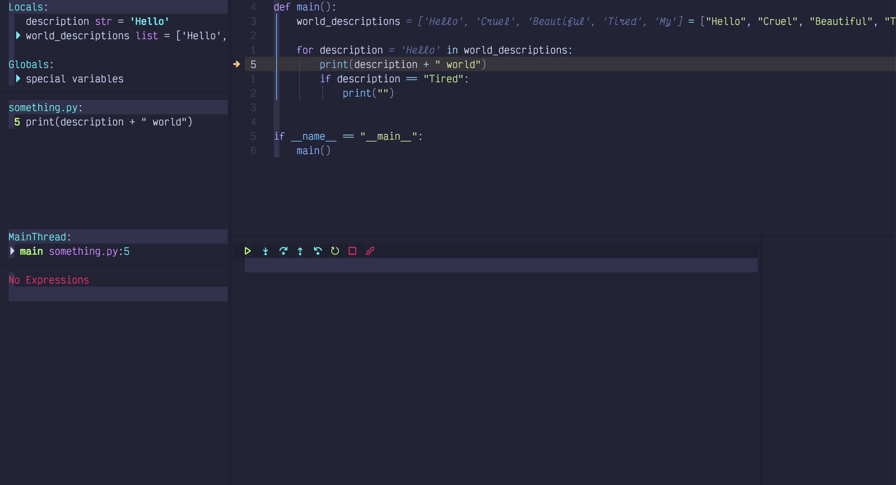
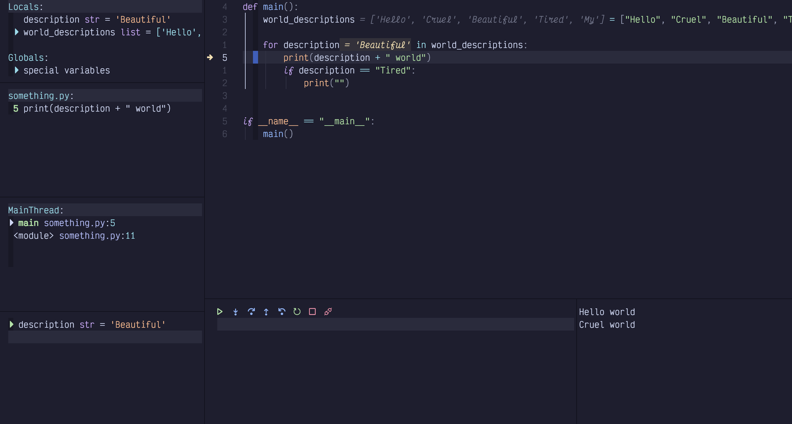
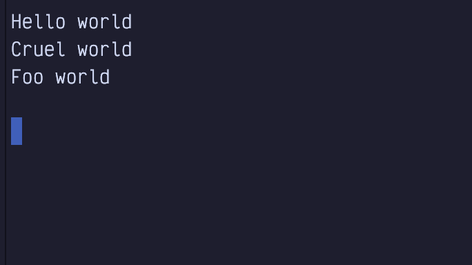
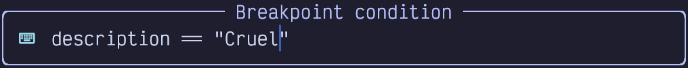

def main():
world_descriptions = ["Hello", "Cruel", "Beautiful", "Tired", "My"]
for description in world_descriptions:
print(description + " world")
if description == "Tired":
print("")
if __name__ == "__main__":
main()Chapter 17. Debugging
LazyVim supports debugging various programming languages right in the editor. To be honest, I’ve spent my entire career debugging largely with logging statements. I’ve always found that the trouble of setting up and integrating a debugger is not worth the time it takes. They work well in toy projects, but once you’re trying to get the debugger to co-operate with e.g. Docker (or get anything to co-operate with Docker for that matter), or async third party libraries, it always feels like it just wasn’t worth the effort.
So what I’m saying is: I’ve never used LazyVim’s debugging system, so writing this chapter is a crash course for me as well. I always learn best by teaching (and teach best by learning)!
17.1. Debug Adapter Protocol
In addition to language server providers, VS Code also brought us the Debug Adapter Protocol, usually shortened to DAP. Like LSPs, DAP is an abstraction to allow editors to integrate with a variety of debuggers without having to reimplement the gritty language details of each one.
Neovim doesn’t have built-in support for DAP like it does for LSPs, but LazyVim
can be configured to enable a collection of essential plugins to use it. To do
so, simply install the dap.core LazyExtra.
If you have also enabled the lazy extras for your preferred programming language,
it is probably already configured to work with DAP. To double check, see if the
lang.<your-preferred-language> extra has a nvim-dap configuration section
in it. If it does, you hopefully don’t need to configure anything.
17.2. Basic Example: Python
If you have installed the dap.core and lang.python Lazy Extras, and you have
Python installed on your system, you are ready to start debugging.
I wrote a simple Python script to demonstrate this:
Listing 54. A Python Script
(The ifmain snippet we noticed in chapter 14 came in handy!)
If you open this file in Neovim and press <Space>d, you’ll see a brand
new menu of debugging commands:

Figure 90. Debugging Menu
Many of these only make sense if the debugger is already running.
Let’s move the cursor to the print(description + "world") line and hit
<Space>db to set a breakpoint. Then we can use the <Space>da command to
open the run menu, which has these options (for the Python Extra) to start
debugging:

Figure 91. Run Args Menu
I don’t know why there are so many because options 1, 2, and 5 all seem to do the same thing. Even when you hit enter with option 1 selected it prompts for arguments. This example doesn’t need arguments, so I just hit enter a second time. The program will run up to the breakpoint and open FIVE new windows surrounding the current window (another vote for investing in big monitors):

Figure 92. Debug UI
Let’s start by discussing the two windows under the editor:
The one on the left contains a toolbar with common debugging actions (most of which can also be accessed from the
<Space>dmini-mode). Depending on language and environment, this window sometimes includes the program output, or messages about actions you’ve taken since the debug session started. In my Python setup, it remains blank.The small window on the right is where the console output so far is displayed, at least for Python. Since this is the first run through the loop, there is nothing in the console section, yet.
| I’ve scaled the window down to fit in this book, but I would normally have this maximized on my largest monitor if I was in an active debugging session. |
Let’s check out the left sidebar, split into several windows:
- Locals and Globals
Provide a list of known variables in the program and their current values. These update as you step through the program. Anything with a little triangle beside it can be expanded by moving the cursor to that line (
smode is delightful here because you can use it to jump directly to the window from the source code) and hittingEnter.- something.py
Shows a list of all the breakpoints currently set. In this case, there is only one, but we can see it is at line 5 and get a preview of that line of code. This information is also highlighted in the code window itself with an arrow pointing at the currently breakpointed line or a big dot if it is not the current breakpoint. This icon stays visible even after I hide the DAP UI with
<Space>du.- MainThread
Shows me the current call stack, which is admittedly pretty simple in this particular program. As with locals and globals you may be able to expand certain lines if there is a small triangle beside it. This program doesn’t have any nested function calls so there’s nothing to see.
- No Expression
I don’t currently have any watch expressions. This window is super-powered because you can enter Insert mode in it. For example, I can add a watch on the
descriptionvariable by typingifollowed bydescriptionand thenenter:
Figure 93. Watch Expression Input
I can now run <Space>dc a couple times to “continue” the debugging session,
which means it will run to the next breakpoint. Since our single breakpoint is
in a loop, it will break in the same place, but with new values:

Figure 94. Break on Beautiful
Notice the word Beautiful in a few different places:
The
descriptionvariable in the locals sectionThe
descriptionwatch we just added in the watches sectionIn the editor window, we see
= Beautifulbeside the description in the loop. Yes, the editor is able to show us the value of variables while we debug, and this feedback is visible even after we hide the DAP UI!
Also notice that we’ve been through the loop twice now, so the console output section in the lower right now has two lines of output.
You can even edit the value of a variable LIVE in the locals window by
navigating your cursor to the line and hitting e to be prompted for a new
value. After changing it to “Foo”, confirming with Enter, and continuing
with <Space>dc,we see that this line gave different output from what
was in the original list:

Figure 95. Live Edited Variable Output
If you want to step through the lines of a function, use <Space>dO for “step
Over”. This will act as if you have a breakpoint on every line in the
function. If you want to jump “out” to the function that called the current
function, use <Space>do (lowercase o this time). <Space>di will jump
“into” the function call under the cursor so you can step through lines inside
the called function.
For conditional breakpoints, use the <Space>dB (uppercase B) instead of <Space>db.
You’ll be prompted to provide a condition as I’ve done here:

Figure 96. Conditional Breakpoint Input
Now if I run <Space>dl (run “last” debugging command, so I don’t have to
select a debugging environment and enter arguments like I did with
<Space>da), it will go through two iterations of the loop, outputting Hello
World before breaking only when description == "Cruel".
So that’s a whirlwind tour of the LazyVim debugger. It worked flawlessly in this example, but as I stated at the beginning, toy examples are normally easy with debuggers.
| Most likely, a real world Python project needs to be run in a virtual environment. If you activate the virtualenv before launching Neovim, the debugger (and LSP tools) should just work with the venv. LazyVim’s Python extra does support selecting virtualenvs, but I find that activating it before I open the editor is the least surprising way to manage it. |
17.3. Remote Debugging (An Example With Go)
You can also run a debug service in a remote location (typically a ssh server or Docker container) and connect to it from your local Neovim. Personally, I would rather install Neovim in the remote location and just run it from there, but that’s a separate rant.
The instructions to actually set up and run the debug adapter in the remote
location are entirely too language dependent. For this example, I’m going to use
Go. I have enabled the lang.go LazyExtra, and tested it on a local file using
steps similar to those described for Python.
Now it’s time to test it in a container. I’m going to use Podman, but you can do this with Docker or ssh as well.
First, I ported the Python script above to Go:
Listing 55. A Go Script
package main
import "fmt"
func main() {
for _, description := range []string{
"Hello",
"Cruel",
"Beautiful",
"Tired",
"My"
} {
fmt.Printf("%s world\n", description)
if description == "Tired" {
fmt.Println()
}
}
}Then I created the following simple ContainerFile:
Listing 56. Golang ContainerFile
FROM golang:1.22-alpine
WORKDIR /app
COPY main.go ./
RUN go build -o /hello main.go
CMD ["/hello"]podman build -t somego . and podman run --rm somego indicate that the two
files are working.
Typically, your organization has a Dockerfile or Containerfile that it
doesn’t want you to mess with to install useful things like a debugger (or
Neovim).
So I always passive aggressively create a separate gitignored
Containerfile.local that extends the company Containerfile.
The debugger for Go is called delve. You can install it temporarily by
running the container as a shell:
Listing 57. Installing Delve in Container
$ podman run --rm -it somego /bin/sh
> go install github.com/go-delve/cmd/dlv@latestNow the container should have a dlv command in it, but only until that
container exits. To make it more permanent, my sneaky Containerfile.local
looks like this:
Listing 58. Sneaky Container Extension
FROM localhost/somego
RUN apk add git
RUN go install github.com/go-delve/delve/cmd/dlv@latest
EXPOSE 40000
CMD ["dlv", "debug", \
"-l", "0.0.0.0:40000", \
"--headless", \
"--accept-multiclient", \
"./main.go"]You can run the dlv command on any port; just make sure you EXPOSE the same one.
Build this container with:
`$ podman build -f Containerfile.local -t my-some-go`then run it with:
`$ podman run --rm -it -p 40000:40000 --name my-some-go my-some-go`One of the many reasons I dislike containers is how verbose the commands have to be. Now it is finally ready to connect a debugger.
The next step is to configure nvim-dap-go to connect to this port. It’s
really rather verbose and a bit fragile. I made a new extend-dap-go.lua file
in my plugins directory that looks like this:
Listing 59. Nvim-Dap Remote Go Configuration
return {
"leoluz/nvim-dap-go",
opts = {
dap_configurations = {
{
type = "go",
name = "Attach container",
mode = "remote",
request = "attach",
substitutePath = {
{
from = "${workspaceFolder}",
to = "/app",
},
},
},
},
delve = {
port = 40000,
},
},
}The port needs to go in a separate delve section, and has the unfortunate
side-effect of always binding to that port, even if you are running a local
debugging session. The substitutePath section is configured to map
breakpoints from your local directory to the /app folder inside the
container. Change it if your Containerfile uses a different WORKDIR.
Restart Neovim to pick up the new configuration and open the main.go file (on
the local filesystem). Set a breakpoint in the usual way with <Space>db. Then
hit <Space>dc to pop up a menu of possible debug configurations. You’ll see
Attach Container in the menu. Select it, invoke whichever debugging gods are
listening to you today, and wait for the breakpoint to hit.
Keep an eye on the podman container output, as that is where the fmt.Print
statements will go. Console output won’t show up in the editor.
The dev experience with this isn’t great (although it’s pretty typical if you
are used to working with containers). You have to stop and restart the
container if you let it run to completion (or if you make changes to the code).
So overall, I recommend doing your go coding and debugging outside the
container. Go is designed to build statically self-contained binaries, after
all. But if you have your reasons to use a container, now you know how to do
it!
17.4. Example: Connect to Chrome
The Chrome debugger in the Browser dev tools window is excellent, so you are
forgiven if you’d rather just use it than the nvim-dap-ui. (Hey, I won’t judge;
I still use console.log for most of my Chrome debugging).
But it turns out to be surprisingly easy to connect from Neovim. First, start
the Chrome browser from the terminal, passing it the
--remote-debugging-port=9222 flag. The exact path to Chrome is OS- and
package-manager dependent; on Linux it might be in your path as google-chrome
and on MacOS if you installed the .dmg, you’ll probably need to access
something like:
Listing 60. Path to Chrome
/Applications/Google\ Chrome.app/Contents/MacOS/Google\ Chrome --remote-debugging-port=9222Second, open Mason from inside Neovim with <Space>cm. Search for
chrome-debug-adapter. Install it with i and restart Neovim.
There is no extra configuration required. This kind of blew my mind, since I
don’t see that LazyVim does anything extra to hook it up. Just open a jsx,
tsx, js, or ts file. Then hit <Space>db to add a breakpoint and
<Space>dc to connect to Chrome and have it break on that breakpoint. I didn’t
even have to select a configuration!
I tested this in a brand new Vite-react app, putting the breakpoint inside a
callback when a button is clicked. Click the button and the debugger pauses
with all the locals set. I can even step deeply into React source code using
<Space>di and LazyVim automatically opens the file from node_modules.
Again, I don’t really see the utility of this over just using the Chrome devtools debugger. Normally, when I’m debugging frontend code, I’m more interested in how my interactions with the browser affect the state of the debug tools, so switching to my editor to continue to the next breakpoint isn’t actually convenient. But there are lots of types of coders out there, and now you know that it works.
17.5. Summary
This chapter was all about debugging code directly from your editor. This is a tricky topic for an author to cover well because debuggers are surprisingly simple when they work, but they don’t often work out of the box. LazyVim does as good a job as I’ve seen (no worse than VS Code) at out-of-the-box configuration, but you’ll still probably be mucking around with configurations before it works with your system. There’s no getting around that.
If you can get it working well, you’ll probably find you’re a more efficient
developer than if you just use print statements. But it can take a long time
to regain the initial set-up time, and the skill isn’t transferable; as soon as
you start a new project, you’ll probably have to go through a different
configuration incantation all over again!
In the next chapter, we’ll discuss Neotest, a tool for running tests from inside your editor.